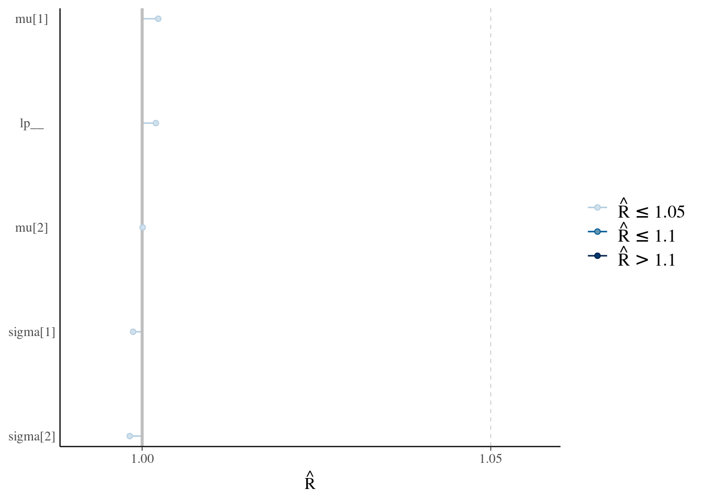
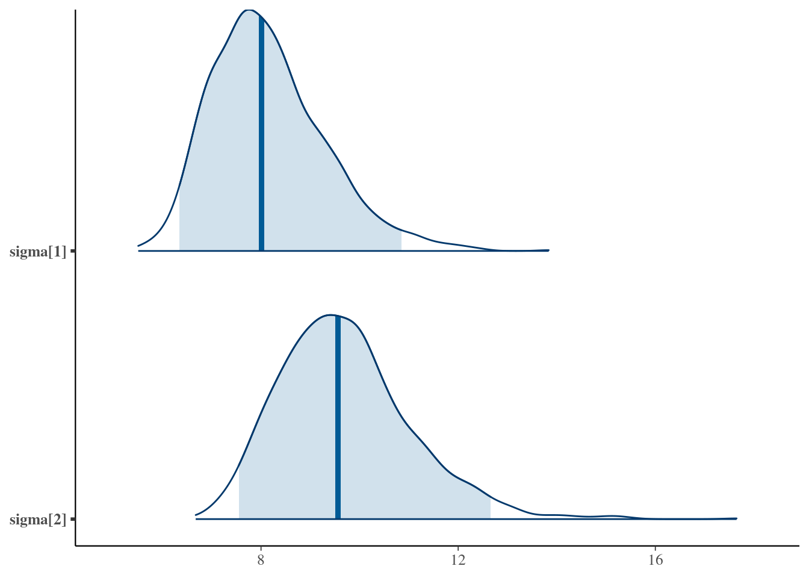
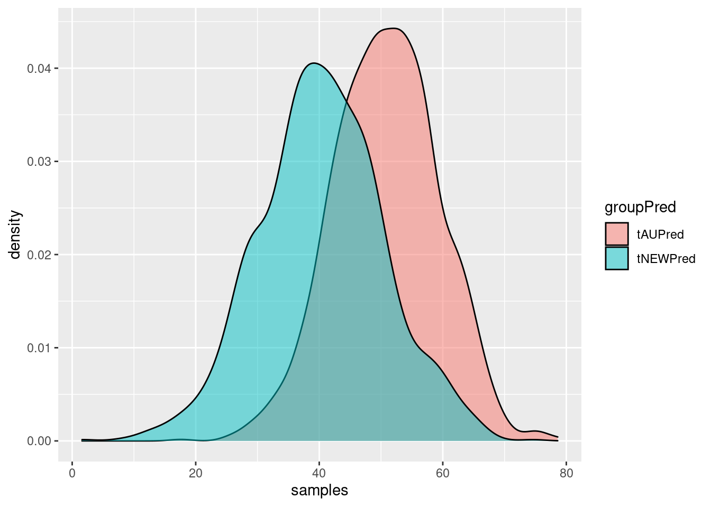
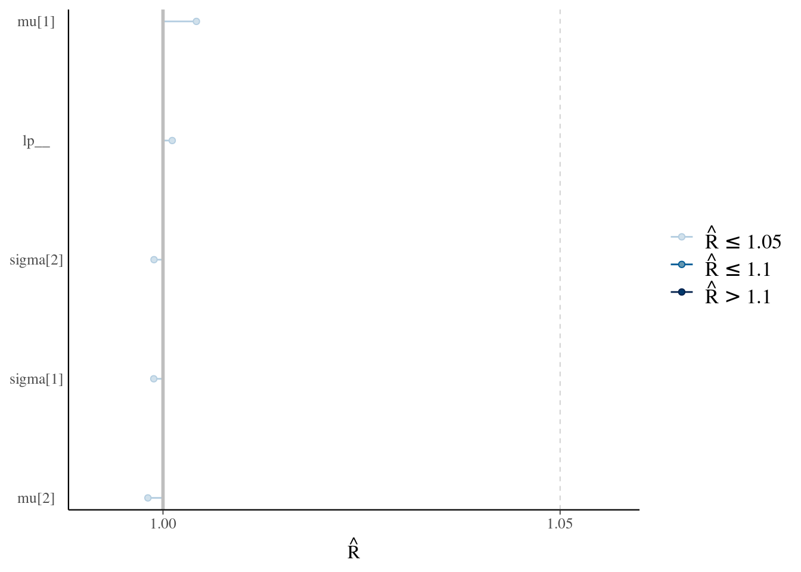
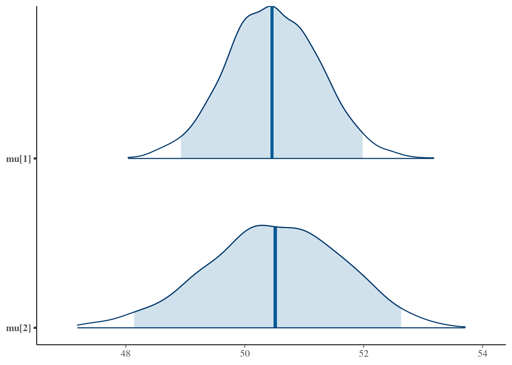

ベイズ統計とRstanの最初の一歩！
Rstanのインストール
本プログラムを走らせるにあたり，最新のRとRstudioをインストールしてください。また，RStan Getting Started (Japanese)を参照して，Rstanのインストールもしてください。Rstanの他に使用するパッケージは，bayesplot，tidyverseです（install.packages()でインストールください）。
使用パッケージの読み込み
rm(list=ls())
library(tidyverse)
library(bayesplot)
library(rstan)データの準備
ある疾患Aに対する新しい治療薬Bの有効性を調べたいとします。そこで，60名の患者を，通常治療(tAU)と通常治療に新しい治療薬を追加した治療(tNEW)の2群に割り付ける臨床試験を実施しました（tAU : tNEW = 1 : 1）。プライマリーアウトカムは，治療一ヶ月後の疾患Aに関する症状評価尺度得点とします（尺度の合計得点範囲は，1 ~ 100点で，症状が重いほど得点が高くなります）。なお，新しい治療は，コストが高いので，通常治療よりも6点以上は高くないといけないとする臨床的な共通認識が存在するとします。
データを作成するにあたり，tAU群(30名)の治療後の症状評価尺度得点は，平均50，標準偏差8の正規分布に従い，tNEW群(30名)の治療後の症状評価尺度得点は，平均40，標準偏差10に従うとします（あくまでデータを作成するために設定しました。実際は，知り得ない情報になります）。
# データの作成
numtAU <- 30
numtNEW <- 30
# 正規分布から乱数発生させてデータを作成
set.seed(321)
scoretAU <- rnorm(numtAU, mean = 50, sd = 8)
scoretNEW <- rnorm(numtNEW, mean = 40, sd = 10)
# 尺度得点は整数なので丸める
scoretAUr <- round(scoretAU, digits = 0)
scoretNEWr <- round(scoretNEW, digits = 0)
# Stanに渡すデータの準備（list型で作成する）
stanData1 <- list(StAU=scoretAUr, StNEW = scoretNEWr, NtAU = numtAU, NtNEW = numtNEW)データの要約と可視化
作成したデータの要約統計量を算出し，図示する。要約統計量の算出には，tidyverseに入っているdplyr，可視化には，tidyverseに入っているggplot2を使っています。
要約統計量
# プロットするためデータのデータフレーム化
group <- rep(c("tAU","tNEW"),times = c(numtAU, numtNEW))
score <- append(scoretAUr,scoretNEWr)
data1 <- data_frame(group,score)
# データの要約
data1 %>%
group_by(group) %>%
summarise(Mean = mean(score,na.rm = T), SD = sd(score,na.rm = T), Min = min(score, na.rm = T), Max = max(score, na.rm = T))## # A tibble: 2 x 5
## group Mean SD Min Max
## <chr> <dbl> <dbl> <dbl> <dbl>
## 1 tAU 50.73333 7.723378 31 70
## 2 tNEW 40.23333 9.261278 18 58チャートプロット＋バイオリンプロット
data1 %>%
ggplot(aes(x = group, y = score, color = group)) +
geom_violin(trim = FALSE) +
geom_jitter(position = position_jitter(0.2)) 
チャートプロット＋箱ひげ図
data1 %>%
ggplot(aes(x = group, y = score, color = group)) +
geom_boxplot(position=position_dodge(0.8)) +
geom_jitter(position = position_jitter(0.2)) ベイズ推定
この試験についての先行研究がなく，情報のある事前分布を設定するのが難しいとします。その場合には，無情報事前分布をおきます。ここでは，各群の平均と標準偏差の無情報事前分布として，0から100の区間の一様分布を指定します。
Stanコード
Stanコードは以下になります。今回，muとsigmaについては，事前分布を明示的に書いていません。この場合は，parametersブロックで指定した範囲の一様分布が事前分布に使われます。
なお，今回は，Stanコードを“”でくくってmodel1にいれて，それをあとでstan()で，コンパイルしてサンプリングしています。一方で，.stanという名前のファイルを作って読み込むスタイルもあります。.stanファイルを作る方がオードソックスですが，ちょと扱いにくいし，ファイルが増えるので私は好きじゃありません（ただの好みです）。ご自身にとって一番しっくりいく方法をご利用ください。
model1 <- "
data{
int NtAU;
int NtNEW;
real StAU[NtAU];
real StNEW[NtNEW];
}
parameters {
vector<lower = 0, upper = 100> [2] mu;
vector<lower = 0, upper = 100> [2] sigma;
}
model {
StAU ~ normal(mu[1],sigma[1]);
StNEW ~ normal(mu[2],sigma[2]);
}
"Rstanによるサンプリング
stan()によって，model1をコンパイルした上で，サンプリングする。ちなみに，コンパイル時にエラーが出るが，それは，気にしなくても良いです。
# Stanの設定（並列化など）
rstan_options(auto_write=TRUE)
options(mc.cores = parallel::detectCores())
# サンプリング
fit1 <- stan(model_code = model1,
seed = 1234,
data = stanData1,
warmup = 300,
iter = 1000,
chains = 4,
thin = 2)## In file included from filefef0485a37a2.cpp:8:
## In file included from /Library/Frameworks/R.framework/Versions/3.4/Resources/library/StanHeaders/include/src/stan/model/model_header.hpp:4:
## In file included from /Library/Frameworks/R.framework/Versions/3.4/Resources/library/StanHeaders/include/stan/math.hpp:4:
## In file included from /Library/Frameworks/R.framework/Versions/3.4/Resources/library/StanHeaders/include/stan/math/rev/mat.hpp:4:
## In file included from /Library/Frameworks/R.framework/Versions/3.4/Resources/library/StanHeaders/include/stan/math/rev/core.hpp:12:
## In file included from /Library/Frameworks/R.framework/Versions/3.4/Resources/library/StanHeaders/include/stan/math/rev/core/gevv_vvv_vari.hpp:5:
## In file included from /Library/Frameworks/R.framework/Versions/3.4/Resources/library/StanHeaders/include/stan/math/rev/core/var.hpp:7:
## In file included from /Library/Frameworks/R.framework/Versions/3.4/Resources/library/BH/include/boost/math/tools/config.hpp:13:
## In file included from /Library/Frameworks/R.framework/Versions/3.4/Resources/library/BH/include/boost/config.hpp:39:
## /Library/Frameworks/R.framework/Versions/3.4/Resources/library/BH/include/boost/config/compiler/clang.hpp:200:11: warning: 'BOOST_NO_CXX11_RVALUE_REFERENCES' macro redefined [-Wmacro-redefined]
## # define BOOST_NO_CXX11_RVALUE_REFERENCES
## ^
## <command line>:6:9: note: previous definition is here
## #define BOOST_NO_CXX11_RVALUE_REFERENCES 1
## ^
## 1 warning generated.収束の確認
トレースプロットの確認
warmupの区間は，チェーンによってばらついていますが，それ以降は，きれいに混ざっています。ちなみに，thin=2にしているので，n_warmupは半分の150になります。
# Warmupもみたいので，それを含めて抽出する
post1Warmup <- extract(fit1, inc_warmup = TRUE, permuted = FALSE)
# トレースプロット
mcmc_trace(post1Warmup, n_warmup = 150)自己相関
自己相関も問題なさそうです。
post1Array <- as.array(fit1)
mcmc_acf(post1Array)Rhatの確認
1.1以下に収まっていました。
mcmc_rhat(rhat(fit1)) + yaxis_text()
有効サンプルサイズ
有効サンプルサイズが0.1を下回ることはありませんでした。
mcmc_neff(neff_ratio(fit1))+ yaxis_text()
推定結果の確認
要約統計量
EAP推定値（mean）をみると，muは要約統計量の平均値と同じくらいで，sigmaは要約統計量よりも少し大きくなっている。
print(fit1)## Inference for Stan model: 714b95f9b4d5aaca8b6732b0753c05e1.
## 4 chains, each with iter=1000; warmup=300; thin=2;
## post-warmup draws per chain=350, total post-warmup draws=1400.
##
## mean se_mean sd 2.5% 25% 50% 75% 97.5%
## mu[1] 50.65 0.04 1.49 47.62 49.71 50.69 51.65 53.41
## mu[2] 40.23 0.05 1.74 36.88 39.06 40.24 41.35 43.54
## sigma[1] 8.10 0.04 1.17 6.29 7.24 7.99 8.67 11.07
## sigma[2] 9.71 0.04 1.30 7.59 8.78 9.57 10.44 12.76
## lp__ -148.65 0.05 1.45 -152.11 -149.37 -148.29 -147.61 -146.86
## n_eff Rhat
## mu[1] 1347 1
## mu[2] 1099 1
## sigma[1] 1087 1
## sigma[2] 1012 1
## lp__ 1021 1
##
## Samples were drawn using NUTS(diag_e) at Thu Feb 1 21:04:30 2018.
## For each parameter, n_eff is a crude measure of effective sample size,
## and Rhat is the potential scale reduction factor on split chains (at
## convergence, Rhat=1).事後分布のプロット
各群の平均と標準偏差の事後密度曲線（中央値と95%確信区間）をプロットします。
post1Matrix <- as.matrix(fit1)
mcmc_areas(post1Matrix, pars = c("mu[1]","mu[2]"),prob = 0.95)
mcmc_areas(post1Matrix, pars = c("sigma[1]","sigma[2]"),prob = 0.95)
平均値差の事後分布
tAU群とtNEW群の母平均値の差(正だとtNEWが優越)の事後分布をプロットします。
# 事後分布からのサンプルを抽出してデータフレーム化
post1DF <- as_data_frame(post1Matrix)
# mu[1](tAU群)とmu[2](tNEW群)の母平均値差を計算しデータフレーム化
muDiff <- post1DF$`mu[1]` - post1DF$`mu[2]`
muDiffData <- data_frame(muDiff)
# EAP推定値，標準偏差，95%信用区間
muDiffData %>%
summarise(Mean = mean(muDiff,na.rm = T), SD = sd(muDiff,na.rm = T), CI_2.5 = quantile(muDiff,probs = 0.025, na.rm = T), CI_97.5 = quantile(muDiff,probs = 0.975, na.rm = T))## # A tibble: 1 x 4
## Mean SD CI_2.5 CI_97.5
## <dbl> <dbl> <dbl> <dbl>
## 1 10.4247 2.252064 6.271428 14.89206# プロット
muDiffData %>%
ggplot(aes(x=muDiff)) +
geom_density()平均値の差が0以上である確率
# 基準点
criteria <- 0
# muDiffでcriteria以下のサンプルの個数
numUnderCriteria <- muDiffData %>%
filter(muDiff <= criteria) %>%
count()
# muDiffでcriteriaより上のサンプルの個数
numOverCriteria <- muDiffData %>%
filter(muDiff > criteria) %>%
count()
# プロット
muDiffData %>%
ggplot(aes(x = muDiff)) +
geom_density() +
geom_vline(xintercept = criteria, colour = "red")
print(paste("群間の平均値の差の事後分布において，",criteria,"以上である確率は，",(numOverCriteria/(numOverCriteria+numUnderCriteria)),"です"))## [1] "群間の平均値の差の事後分布において， 0 以上である確率は， 1 です"#平均値の差が6以上である確率
# 基準点
criteria <- 6
# muDiffでcriteria以下のサンプルの個数
numUnderCriteria <- muDiffData %>%
filter(muDiff <= criteria) %>%
count()
# muDiffでcriteriaより上のサンプルの個数
numOverCriteria <- muDiffData %>%
filter(muDiff > criteria) %>%
count()
# プロット
muDiffData %>%
ggplot(aes(x = muDiff)) +
geom_density() +
geom_vline(xintercept = criteria, colour = "red")
print(paste("群間の平均値の差の事後分布において，",criteria,"以上である確率は，",(numOverCriteria/(numOverCriteria+numUnderCriteria)),"です"))## [1] "群間の平均値の差の事後分布において， 6 以上である確率は， 0.978571428571429 です"事後予測分布
２群の平均と標準偏差の事後分布からのサンプルと正規分布を用いて，データを発生させて，事後予測分布を作成する。今回は，Stanの外側で処理をしているが，generated quantities{}ブロックで，_rngを使って，任意のパラメータの事後予測分布を出すこともできる。
# 事後分布のサンプル数分，サンプルと正規分布からデータを作成
numSamples <- length(post1DF$`mu[1]`)
tAUPred <- rnorm(numSamples,post1DF$`mu[1]`,post1DF$`sigma[1]`)
tNEWPred <- rnorm(numSamples,post1DF$`mu[2]`,post1DF$`sigma[2]`)
# 事後分布と事前分布のサンプルを結合，ラベルの作成，データフレーム化
samples <- append(tAUPred,tNEWPred)
groupPred <- rep(c('tAUPred','tNEWPred'), times = c(numSamples,numSamples))
postPred <- data_frame(groupPred, samples)
postPred %>%
ggplot(aes(samples, fill = groupPred)) +
geom_density(alpha = 0.5)
# データの要約
postPred %>%
group_by(groupPred) %>%
summarise(Mean = mean(samples,na.rm = T), SD = sd(samples,na.rm = T), CI_2.5 = quantile(samples,probs = 0.025, na.rm = T), CI_97.5 = quantile(samples,probs = 0.975, na.rm = T))## # A tibble: 2 x 5
## groupPred Mean SD CI_2.5 CI_97.5
## <chr> <dbl> <dbl> <dbl> <dbl>
## 1 tAUPred 50.96938 8.384137 34.57607 68.04972
## 2 tNEWPred 40.28518 9.963403 20.71478 59.34542ベイズ更新
上記の結果から，２群の平均と標準偏差の事後分布のEAP推定値と標準偏差は以下のようになる。
| EAP推定値 | 標準偏差 | |
|---|---|---|
| tAU mu | 50.76 | 1.47 |
| tNEW mu | 40.22 | 1.69 |
| tAU sigma | 8.17 | 1.15 |
| tNEW sigma | 9.71 | 1.27 |
今回，群間の平均に差が認められたので，もっと大規模な臨床試験を計画しました。今度は，120名の患者を集めて，各群60名ずつ無作為割付を行いました。 あまり強い事前分布を置くのはその合理性の主張が難しいですが，今回は，ベイズ更新の練習のために，上記の事後分布を事前分布に指定した解析を行います。
データの準備
なお，今回の新たな試験は，tAU群(60名)の治療後の症状評価尺度得点は，平均50，標準偏差7の正規分布に従い，tNEW群(60名)の治療後の症状評価尺度得点は，平均55，標準偏差7に従うとします。つまり，先程は，tNEW群が優越だったのですが，今度は，やや劣るという結果になります。
# データの作成
numtAU <- 60
numtNEW <- 60
# 乱数発生でデータを作成
set.seed(321)
scoretAU <- rnorm(numtAU, mean = 50, sd = 7)
scoretNEW <- rnorm(numtNEW, mean = 55, sd = 7)
# 尺度得点は整数なので丸める
scoretAUr <- round(scoretAU, digits = 0)
scoretNEWr <- round(scoretNEW, digits = 0)
# Stanに渡すデータの準備（list型で作成する）
stanData2 <- list(StAU=scoretAUr, StNEW = scoretNEWr, NtAU = numtAU, NtNEW = numtNEW)データの要約と可視化
作成したデータの要約統計量を算出し，図示する。
要約統計量
# プロットするためデータのデータフレーム化
group <- rep(c("tAU","tNEW"),times = c(numtAU, numtNEW))
score <- append(scoretAUr,scoretNEWr)
data2 <- data_frame(group,score)
# データの要約
data2 %>%
group_by(group) %>%
summarise(Mean = mean(score,na.rm = T), SD = sd(score,na.rm = T), Min = min(score, na.rm = T), Max = max(score, na.rm = T))## # A tibble: 2 x 5
## group Mean SD Min Max
## <chr> <dbl> <dbl> <dbl> <dbl>
## 1 tAU 50.33333 6.544934 34 67
## 2 tNEW 54.71667 6.561551 38 71チャートプロット＋バイオリンプロット
data2 %>%
ggplot(aes(x = group, y = score, color = group)) +
geom_violin(trim = FALSE) +
geom_jitter(position = position_jitter(0.2)) 
チャートプロット＋箱ひげ図
data2 %>%
ggplot(aes(x = group, y = score, color = group)) +
geom_boxplot(position=position_dodge(0.8)) +
geom_jitter(position = position_jitter(0.2)) 
Stanコード
先程の事後分布から以下のような事前分布を設定した。
- mu[1] ~ normal(50.76, 1.47);
- mu[2] ~ normal(40.22, 1.69);
- sigma[1] ~ normal(8.17, 1.15);
- sigma[2] ~ normal(9.71, 1.27);
model2 <- "
data{
int NtAU;
int NtNEW;
real StAU[NtAU];
real StNEW[NtNEW];
}
parameters {
vector<lower = 0, upper = 100> [2] mu;
vector<lower = 0, upper = 100> [2] sigma;
}
model {
mu[1] ~ normal(50.76, 1.47);
mu[2] ~ normal(40.22, 1.69);
sigma[1] ~ normal(8.17, 1.15);
sigma[2] ~ normal(9.71, 1.27);
StAU ~ normal(mu[1],sigma[1]);
StNEW ~ normal(mu[2],sigma[2]);
}
"Rstanによるサンプリング
stan()によって，model1（無情報事前分布）とmodel2（ベイズ更新）をコンパイルした上で，サンプリングする。
# Stanの設定（並列化など）
rstan_options(auto_write=TRUE)
options(mc.cores = parallel::detectCores())
# さきほどの事後分布を事前分布に使ったもの
fit2 <- stan(model_code = model2,
seed = 1234,
data = stanData2,
warmup = 300,
iter = 1000,
chains = 4,
thin = 2)## In file included from filefef06cb5236f.cpp:8:
## In file included from /Library/Frameworks/R.framework/Versions/3.4/Resources/library/StanHeaders/include/src/stan/model/model_header.hpp:4:
## In file included from /Library/Frameworks/R.framework/Versions/3.4/Resources/library/StanHeaders/include/stan/math.hpp:4:
## In file included from /Library/Frameworks/R.framework/Versions/3.4/Resources/library/StanHeaders/include/stan/math/rev/mat.hpp:4:
## In file included from /Library/Frameworks/R.framework/Versions/3.4/Resources/library/StanHeaders/include/stan/math/rev/core.hpp:12:
## In file included from /Library/Frameworks/R.framework/Versions/3.4/Resources/library/StanHeaders/include/stan/math/rev/core/gevv_vvv_vari.hpp:5:
## In file included from /Library/Frameworks/R.framework/Versions/3.4/Resources/library/StanHeaders/include/stan/math/rev/core/var.hpp:7:
## In file included from /Library/Frameworks/R.framework/Versions/3.4/Resources/library/BH/include/boost/math/tools/config.hpp:13:
## In file included from /Library/Frameworks/R.framework/Versions/3.4/Resources/library/BH/include/boost/config.hpp:39:
## /Library/Frameworks/R.framework/Versions/3.4/Resources/library/BH/include/boost/config/compiler/clang.hpp:200:11: warning: 'BOOST_NO_CXX11_RVALUE_REFERENCES' macro redefined [-Wmacro-redefined]
## # define BOOST_NO_CXX11_RVALUE_REFERENCES
## ^
## <command line>:6:9: note: previous definition is here
## #define BOOST_NO_CXX11_RVALUE_REFERENCES 1
## ^
## 1 warning generated.# 無情報的事前分布を使ったもの（これはあとで比較する用，先ほどと同じmodel1を使用）
fit3 <- stan(model_code = model1,
seed = 1234,
data = stanData2,
warmup = 300,
iter = 1000,
chains = 4,
thin = 2)収束の確認
煩雑なので，収束の確認は，ベイズ更新を試しているfit2だけやります（fit3も収束しているので，各自でご確認ください）。
トレースプロットの確認
warmupの区間は，チェーンによってばらついていますが，それ以降は，きれいに混ざっています。
# Warmupもみたいので，それを含めて抽出する
post2Warmup <- extract(fit2, inc_warmup = TRUE, permuted = FALSE)
# トレースプロット
mcmc_trace(post2Warmup, n_warmup = 150)
Rhatの確認
1.1以下に収まっていました。
mcmc_rhat(rhat(fit2)) + yaxis_text()
有効サンプルサイズ
有効サンプルサイズが0.1を下回ることはありませんでした。
mcmc_neff(neff_ratio(fit2))+ yaxis_text()
自己相関
自己相関も問題なさそうです。
post2Array <- as.array(fit2)
mcmc_acf(post2Array)推定結果の確認
要約統計量
先程のtNEWが優勢なデータの事後分布を用いてベイズ更新したところ，記述統計的にはtAUが優勢にもかからず，２群の平均は約50でほぼ同じになりました。
print(fit2)## Inference for Stan model: 2238085ebfd919a8f19826c5fd5f40bc.
## 4 chains, each with iter=1000; warmup=300; thin=2;
## post-warmup draws per chain=350, total post-warmup draws=1400.
##
## mean se_mean sd 2.5% 25% 50% 75% 97.5%
## mu[1] 50.45 0.02 0.76 48.95 49.96 50.45 50.95 51.86
## mu[2] 50.48 0.03 1.10 48.19 49.81 50.55 51.26 52.48
## sigma[1] 7.03 0.02 0.62 5.93 6.60 6.99 7.44 8.33
## sigma[2] 8.44 0.02 0.88 6.79 7.80 8.42 9.04 10.19
## lp__ -307.06 0.04 1.40 -310.52 -307.79 -306.81 -306.02 -305.28
## n_eff Rhat
## mu[1] 1400 1
## mu[2] 1237 1
## sigma[1] 1400 1
## sigma[2] 1267 1
## lp__ 1212 1
##
## Samples were drawn using NUTS(diag_e) at Thu Feb 1 21:05:56 2018.
## For each parameter, n_eff is a crude measure of effective sample size,
## and Rhat is the potential scale reduction factor on split chains (at
## convergence, Rhat=1).事後分布のプロット
各群の平均と標準偏差の事後密度曲線（中央値と95%確信区間）をプロットします。
post2Matrix <- as.matrix(fit2)
mcmc_areas(post2Matrix, pars = c("mu[1]","mu[2]"),prob = 0.95)
mcmc_areas(post2Matrix, pars = c("sigma[1]","sigma[2]"),prob = 0.95)
無情報事前分布の場合
一方，過去の試験の事後分布をベイズ更新せず，無情報事前分布をおいた場合は，以下のようになり，ちゃんとtAUの方が優勢になっています。
print(fit3)## Inference for Stan model: 714b95f9b4d5aaca8b6732b0753c05e1.
## 4 chains, each with iter=1000; warmup=300; thin=2;
## post-warmup draws per chain=350, total post-warmup draws=1400.
##
## mean se_mean sd 2.5% 25% 50% 75% 97.5%
## mu[1] 50.35 0.02 0.91 48.59 49.74 50.38 50.96 52.13
## mu[2] 54.68 0.02 0.84 53.06 54.14 54.68 55.25 56.39
## sigma[1] 6.70 0.02 0.63 5.61 6.26 6.64 7.08 8.04
## sigma[2] 6.70 0.02 0.62 5.61 6.28 6.67 7.07 8.06
## lp__ -276.57 0.04 1.38 -279.84 -277.26 -276.29 -275.50 -274.79
## n_eff Rhat
## mu[1] 1400 1
## mu[2] 1336 1
## sigma[1] 1400 1
## sigma[2] 1379 1
## lp__ 1272 1
##
## Samples were drawn using NUTS(diag_e) at Thu Feb 1 21:06:01 2018.
## For each parameter, n_eff is a crude measure of effective sample size,
## and Rhat is the potential scale reduction factor on split chains (at
## convergence, Rhat=1).post3Matrix <- as.matrix(fit3)
mcmc_areas(post3Matrix, pars = c("mu[1]","mu[2]"),prob = 0.95)
mcmc_areas(post3Matrix, pars = c("sigma[1]","sigma[2]"),prob = 0.95)平均値差の事後分布
tAU群とtNEW群の母平均値の差(正だとtNEWが優越)の事後分布をプロットします。ベイズ更新した方は，群間の平均の差のEAP推定値は，約0であり，95%信用区間も0をまたいでいます。一方，無情報事前分布の方は，群間の平均値の差のEAP推定値は，-4.39であり，95%信用区間は0をまたいでいません。事前分布によって，かなり結果が異なりました。
# 事後分布からのサンプルを抽出してデータフレーム化
post2DF <- as_data_frame(post2Matrix)
post3DF <- as_data_frame(post3Matrix)
# mu[1](tAU群)とmu[2](tNEW群)の母平均値差を計算しデータフレーム化
muDiffBayesUpDate <- post2DF$`mu[1]` - post2DF$`mu[2]`
muDiffNonInfoPrior <- post3DF$`mu[1]` - post3DF$`mu[2]`
muDiff <- append(muDiffBayesUpDate,muDiffNonInfoPrior)
numSamples <- length(post2DF$`mu[1]`)
priorType <- rep(c('Bayesian Updating','Non-informative Priors'), times = c(numSamples,numSamples))
muDiffData <- data_frame(priorType,muDiff)
# EAP推定値，標準偏差，95%信用区間
muDiffData %>%
group_by(priorType) %>%
summarise(Mean = mean(muDiff,na.rm = T), SD = sd(muDiff,na.rm = T), CI_2.5 = quantile(muDiff,probs = 0.025, na.rm = T), CI_97.5 = quantile(muDiff,probs = 0.975, na.rm = T))## # A tibble: 2 x 5
## priorType Mean SD CI_2.5 CI_97.5
## <chr> <dbl> <dbl> <dbl> <dbl>
## 1 Bayesian Updating -0.03295768 1.314452 -2.499104 2.636198
## 2 Non-informative Priors -4.33301912 1.251997 -6.702333 -1.886777# プロット
muDiffData %>%
ggplot(aes(x = muDiff, fill = priorType)) +
geom_density(alpha = 0.5)
平均値の差が0より小さい確率
# 基準点
criteria <- 0
# Bayesisn Updatingにおいて，muDiffでcriteria以下のサンプルの個数
numUnderCriteriaBU <- muDiffData %>%
filter(priorType == 'Bayesian Updating') %>%
filter(muDiff <= criteria) %>%
count()
# Bayesisn Updatingにおいて，muDiffでcriteriaより上のサンプルの個数
numOverCriteriaBU <- muDiffData %>%
filter(priorType == 'Bayesian Updating') %>%
filter(muDiff > criteria) %>%
count()
# Non-informative Priorsにおいて，muDiffでcriteria以下のサンプルの個数
numUnderCriteriaNI <- muDiffData %>%
filter(priorType == 'Non-informative Priors') %>%
filter(muDiff <= criteria) %>%
count()
# Non-informative Priorsにおいて，muDiffでcriteriaより上のサンプルの個数
numOverCriteriaNI <- muDiffData %>%
filter(priorType == 'Non-informative Priors') %>%
filter(muDiff > criteria) %>%
count()
# プロット
muDiffData %>%
ggplot(aes(x = muDiff, fill = priorType)) +
geom_density(alpha = 0.5) +
geom_vline(xintercept = criteria, colour = "red")print(paste("Bayesisn Updatinにおいて，群間の平均値の差の事後分布が，",criteria,"より小さい確率は，",(numUnderCriteriaBU/(numOverCriteriaBU+numUnderCriteriaBU)),"です"))## [1] "Bayesisn Updatinにおいて，群間の平均値の差の事後分布が， 0 より小さい確率は， 0.537857142857143 です"print(paste("Non-informative Priorsにおいて，群間の平均値の差の事後分布が，",criteria,"より小さい確率は，",(numUnderCriteriaNI/(numOverCriteriaNI+numUnderCriteriaNI)),"です"))## [1] "Non-informative Priorsにおいて，群間の平均値の差の事後分布が， 0 より小さい確率は， 1 です"平均値の差が-6以下である確率
# 基準点
criteria <- -6
# Bayesisn Updatingにおいて，muDiffでcriteria以下のサンプルの個数
numUnderCriteriaBU <- muDiffData %>%
filter(priorType == 'Bayesian Updating') %>%
filter(muDiff <= criteria) %>%
count()
# Bayesisn Updatingにおいて，muDiffでcriteriaより上のサンプルの個数
numOverCriteriaBU <- muDiffData %>%
filter(priorType == 'Bayesian Updating') %>%
filter(muDiff > criteria) %>%
count()
# Non-informative Priorsにおいて，muDiffでcriteria以下のサンプルの個数
numUnderCriteriaNI <- muDiffData %>%
filter(priorType == 'Non-informative Priors') %>%
filter(muDiff <= criteria) %>%
count()
# Non-informative Priorsにおいて，muDiffでcriteriaより上のサンプルの個数
numOverCriteriaNI <- muDiffData %>%
filter(priorType == 'Non-informative Priors') %>%
filter(muDiff > criteria) %>%
count()
# プロット
muDiffData %>%
ggplot(aes(x = muDiff, fill = priorType)) +
geom_density(alpha = 0.5) +
geom_vline(xintercept = criteria, colour = "red")print(paste("Bayesisn Updatinにおいて，群間の平均値の差の事後分布が，",criteria,"以下である確率は，",(numUnderCriteriaBU/(numOverCriteriaBU+numUnderCriteriaBU)),"です"))## [1] "Bayesisn Updatinにおいて，群間の平均値の差の事後分布が， -6 以下である確率は， 0 です"print(paste("Non-informative Priorsにおいて，群間の平均値の差の事後分布が，",criteria,"以下である確率は，",(numUnderCriteriaNI/(numOverCriteriaNI+numUnderCriteriaNI)),"です"))## [1] "Non-informative Priorsにおいて，群間の平均値の差の事後分布が， -6 以下である確率は， 0.1 です"事後予測分布
tAUについては，事前分布による違いが少なそうなので，今回は，Bayesian UpdatingとNon-informative Priorsの２種類のtNEWの事後予測分布を計算します。
# 事後分布のサンプル数分，サンプルと正規分布からデータを作成
numSamples <- length(post2DF$`mu[1]`)
tNEWPredBayesianUpdating <- rnorm(numSamples,post2DF$`mu[2]`,post2DF$`sigma[2]`)
tNEWPredNonInformative <- rnorm(numSamples,post3DF$`mu[2]`,post3DF$`sigma[2]`)
# 事後分布と事前分布のサンプルを結合，ラベルの作成，データフレーム化
samples <- append(tNEWPredBayesianUpdating,tNEWPredNonInformative)
postPred <- data_frame(priorType, samples)
postPred %>%
ggplot(aes(samples, fill = (priorType))) +
geom_density(alpha = 0.5)# データの要約
postPred %>%
group_by(priorType) %>%
summarise(Mean = mean(samples,na.rm = T), SD = sd(samples,na.rm = T), CI_2.5 = quantile(samples,probs = 0.025, na.rm = T), CI_97.5 = quantile(samples,probs = 0.975, na.rm = T))## # A tibble: 2 x 5
## priorType Mean SD CI_2.5 CI_97.5
## <chr> <dbl> <dbl> <dbl> <dbl>
## 1 Bayesian Updating 50.65162 8.61828 33.40011 66.91980
## 2 Non-informative Priors 54.67939 6.76713 41.14656 68.19449